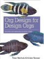

Design & UX
Category: 125 posts
Where to Start with UX
As a Design Manager in the field of User Experience, I’m often asked the question: How do I get into the field of user experience? There are many paths you could take.
Org Design for Design Orgs
As a Design Manager in the field of User Experience, I’m often asked the question: How do I get into the field of user experience? There are many paths you could take.